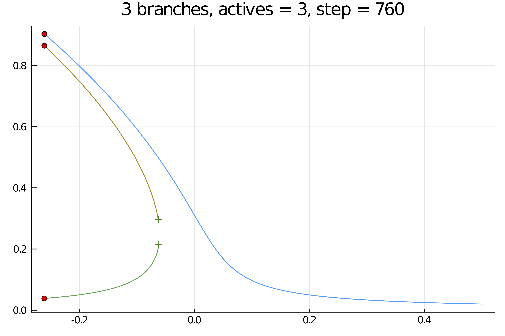

Deflated Continuation
Farrell, Patrick E., Casper H. L. Beentjes, and Ásgeir Birkisson. The Computation of Disconnected Bifurcation Diagrams. ArXiv:1603.00809 [Math], March 2, 2016. http://arxiv.org/abs/1603.00809.
Deflated continuation allows to compute branches of solutions to the equation $F(x,p)=0$. It is based on the Deflated Newton (see Deflated problems).
However, unlike the regular continuation method, deflated continuation allows to compute disconnected bifurcation diagrams, something that is impossible to our Automatic Bifurcation diagram computation method.
You can find an example of use in the Deflated Continuation in the Carrier Problem. We reproduce below the result of the computation:

Algorithm
Input: Initial parameter value λmin.
Input: Final parameter value λmax > λmin. Input: Step size ∆λ > 0.
Input: Nonlinear residual f(u,λ).
Input: Deflation operator M(u; u∗).
Input: Initial solutions S(λmin) to f(·,λmin).
λ ← λmin
while λ < λmax do
F(·) ← f(·,λ+∆λ) ◃ Fix the value of λ to solve for.
S(λ+∆λ) ← ∅
for u0 ∈ S(λ) do ◃ Continue known branches.
apply Newton’s method to F from initial guess u0.
if solution u∗ found then
S(λ + ∆λ) ← S(λ + ∆λ) ∪ {u∗} ◃ Record success
F(·) ← M(·;u∗)F(·) ◃ Deflate solution
for u0 ∈ S(λ) do ◃ Seek new branches.
success ← true
while success do
apply Newton’s method to F from initial guess u0.
if solution u∗ found then
S(λ + ∆λ) ← S(λ + ∆λ) ∪ {u∗} ◃ Record success
F(·) ← M(·;u∗)F(·) ◃ Deflate solution
else
success ← false
λ←λ+∆λ
return STips
The following piece of information is valuable in order to get the algorithm working in various conditions (see also here) especially for small systems (e.g. dim<20):
newtonis quite good and it is convenient to limit it otherwise it will be able to bypass the deflation. For example, you can usemaxIter=10inNewtonPar- try to limit the newton residual by using the argument
callbackN = (x, f, J, res, iteration, itlinear, options; kwargs...) -> res <1e7. This will likely remove the occurence of┌ Error: Same solution found for identical parameter value!! - finally, you can try some agressive shift (here
0.01in the deflation operator, likeDeflationOperator(2.0, dot, 0.01, [sol])but use it wisely.
Basic example
We show a quick and simple example of use. Note in particular that the algoritm is able to find the disconnected branch. The starting points are marked with crosses
using BifurcationKit, LinearAlgebra, Setfield, SparseArrays, Plots
const BK = BifurcationKit
k = 2
N = 1
F = (x, p) -> p .* x .+ x.^(k+1)/(k+1) .+ 0.01
Jac_m = (x, p) -> diagm(0 => p .+ x.^k)
opts = BK.ContinuationPar(dsmax = 0.051, dsmin = 1e-3, ds=0.001, maxSteps = 140, pMin = -3., saveSolEveryStep = 0, newtonOptions = NewtonPar(tol = 1e-8, verbose = false), saveEigenvectors = false)
brdc, = continuation(F,Jac_m, 0.5, (@lens _),
ContinuationPar(opts, ds = -0.001, maxSteps = 800, newtonOptions = NewtonPar(verbose = false, maxIter = 6), plotEveryStep = 40),
DeflationOperator(2.0, dot, .001, [[0.]]); showplot=true, verbosity = 0,
perturbSolution = (x,p,id) -> (x .+ 0.1 .* rand(length(x))),
callbackN = (x, f, J, res, iteration, itlinear, options; kwargs...) -> res <1e3)
plot(brdc...)